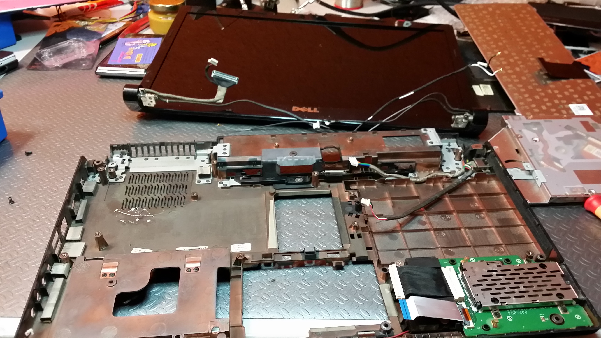
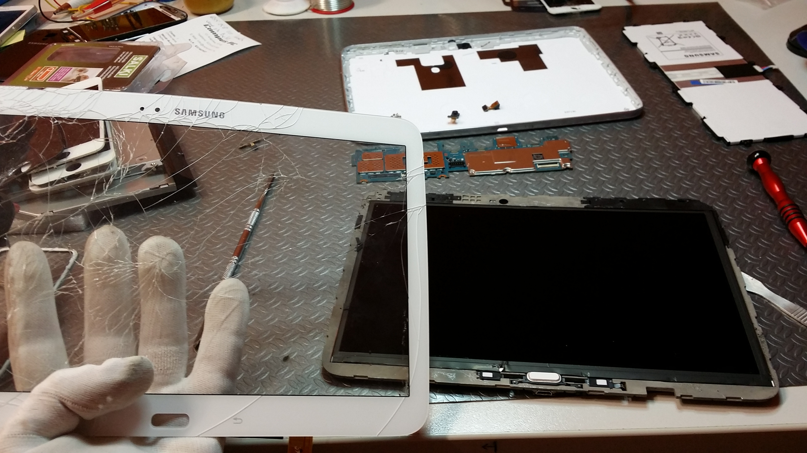
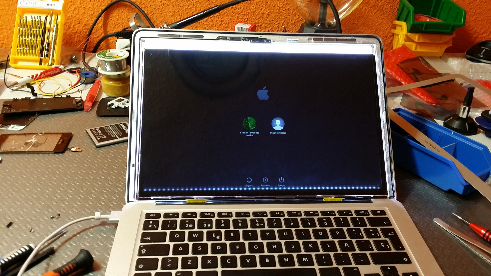

Ordenadores
PC y Mac, sobremesa y portátil. Hardware y software: placa base, disco duro, gráfica, virus, formateo, lentitud, pantalla negra.
Ver más
Ordenadores, móviles, tablets, consolas y televisores. Más de 18 años solucionando problemas tecnológicos en Salamanca con trato cercano, precios transparentes y reparaciones en tiempo record.
Reparación, venta y asesoramiento técnico para todo tipo de dispositivos electrónicos. Presupuesto previo, sin sorpresas.
PC y Mac, sobremesa y portátil. Hardware y software: placa base, disco duro, gráfica, virus, formateo, lentitud, pantalla negra.
Ver másPantalla rota, conector de carga, batería, cámara, placa base. Todas las marcas: Apple, Samsung, Xiaomi, Huawei y más.
Ver másReparación de pantalla, batería y software para tablets y lectores electrónicos de todas las marcas del mercado.
Ver másPlayStation, Xbox, Nintendo. Problemas de temperatura, gráfica dañada, lector estropeado, batería de mando.
Ver másSin imagen, sin sonido, mando averiado. Diagnosticamos y reparamos televisores de todas las marcas y tamaños.
Ver másTinta para impresora, auriculares, pendrive, ratón, teclado, protectores. Ordenadores nuevos a medida.
Ver más
En Campus PC no eres un número: te escuchamos, diagnosticamos el problema con transparencia y te damos un presupuesto honesto antes de tocar nada. Si se puede reparar, lo reparamos. Si no merece la pena, te lo decimos.
Detrás de cada reparación hay una forma de entender el servicio al cliente.
Presupuesto claro antes de reparar. Si no merece la pena, te lo decimos. Cobramos lo presupuestado, aunque el trabajo nos lleve más tiempo del previsto.
Te atendemos como nos gustaría que nos atendiesen a nosotros. Sin tecnicismos innecesarios, con paciencia y empatía.
No llenamos el planeta de residuos tecnológicos. Si se puede, le damos una segúnda oportunidad a tu dispositivo antes de sustituirlo.
4,6 sobre 5 en Google Maps con 231 reseñas verificadas.
"Siempre compro todoallí, da gusto con ese chico, me aconseja según mis necesidades."
"Estupendo servicio informático con buenos precios, trato agradable y muy rápido."
"Me lo ha limpiado por dentro y de virus y ahora va fenomenal, como nunca."



Dependiendo de la avería y la disponibilidad del repuesto, muchas reparaciones de móvil se resuelven en 1 hora. Cambios de pantalla, batería o conector de carga suelen estar listos en el día.
Si. Trabajamos con ambos sistemas, tanto a nivel de hardware (placa base, disco duro, gráfica, pantalla, teclado, cargador) como de software (virus, lentitud, pantalla negra, formateo).
Si. Siempre diagnosticamos la avería y te pasamos un presupuesto antes de hacer ninguna reparación. Sin sorpresas.
Estamos en la Calle Arapiles 48, 37007 Salamanca. Abrimos de lunes a viernes de 10:00 a 14:30 y de 17:00 a 20:00, y los sábados de 11:00 a 13:30.
Si. Tenemos tinta para impresora, auriculares, pendrive, ratón, teclado y todo tipo de accesorios. También montamos ordenadores a medida según tus necesidades y presupuesto.
Estamos en el barrio de Garrido, en plena Calle Arapiles. Trae tu dispositivo y te damos un diagnóstico rápido.